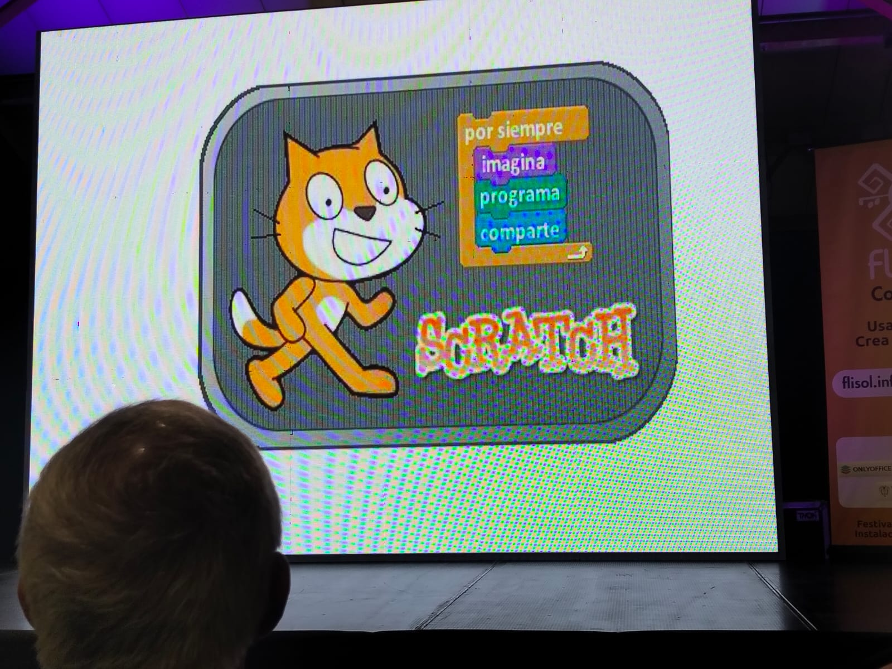
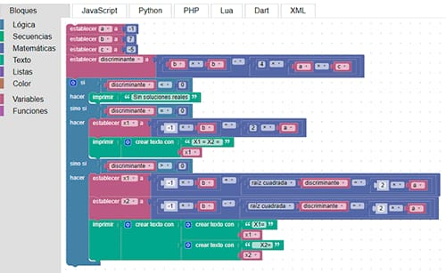
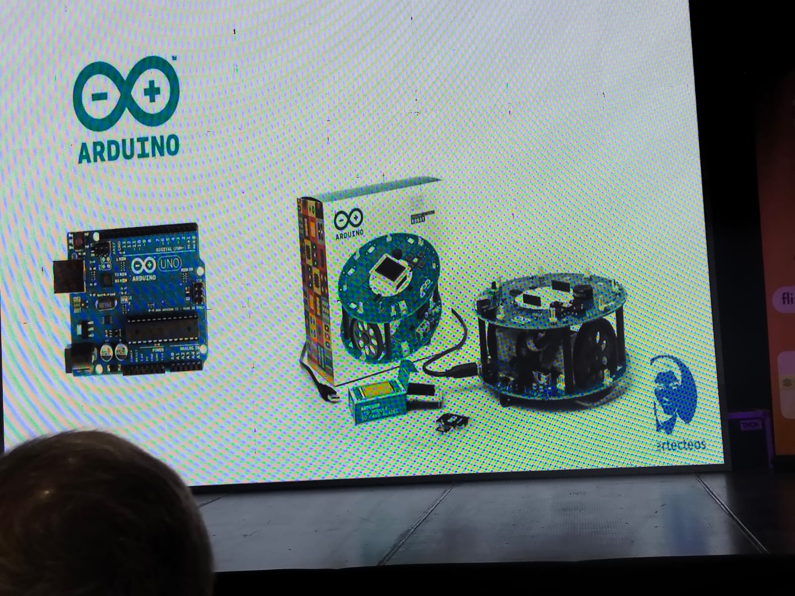
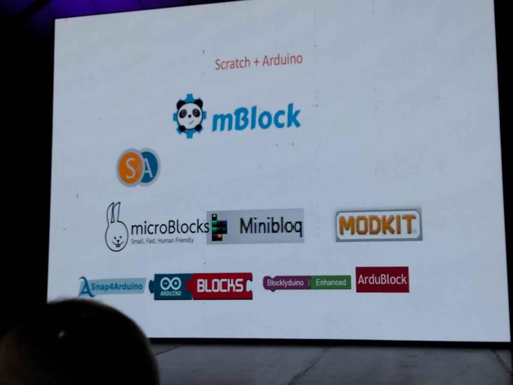
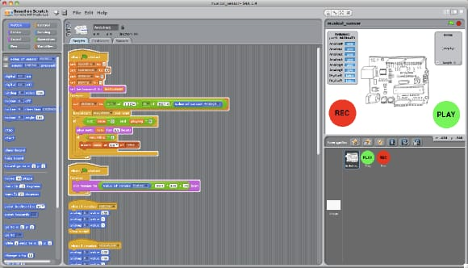
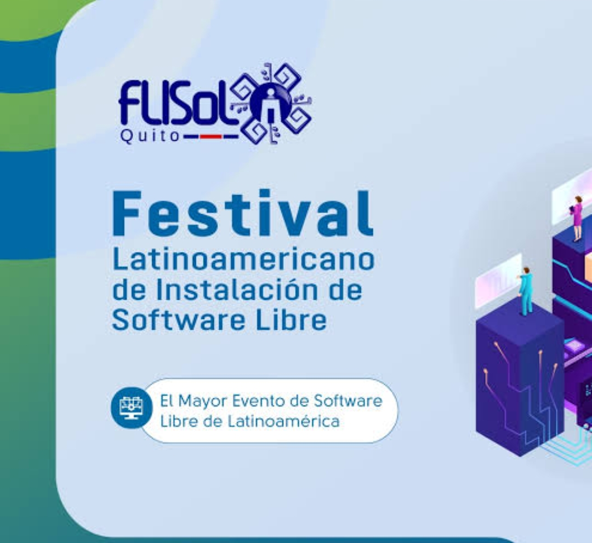
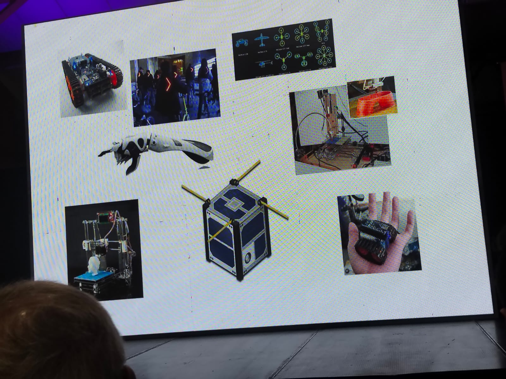

Scratch
Scratch es un lenguaje de programación visual desarrollado por el grupo Lifelong Kindergarten del MIT Media Lab.
Permite crear animaciones, videojuegos, historias interactivas y simulaciones mediante bloques de programación fáciles de usar.

Blockly
Blockly es una biblioteca de programación visual desarrollada por Google.
Los bloques pueden convertirse automáticamente en código JavaScript, Python, PHP, Lua y otros lenguajes.

Arduino
Arduino es una plataforma de hardware libre diseñada para facilitar la creación de proyectos electrónicos.
Se utiliza ampliamente en robótica, automatización, domótica y proyectos educativos STEM.

S4A (Scratch for Arduino)
S4A adapta Scratch para controlar placas Arduino mediante programación en bloques.
Permite manejar sensores, LEDs, motores y otros dispositivos electrónicos sin escribir código complejo.

Squeak
Squeak es un entorno de programación basado en Smalltalk utilizado en las primeras versiones de Scratch.
Destaca por ser abierto, educativo y altamente interactivo para el aprendizaje de la programación.

Software Libre
El software libre garantiza la libertad de usar, estudiar, modificar y compartir programas.
Favorece la colaboración, la transparencia y la independencia tecnológica de las comunidades.
Pensamiento Computacional
Es la capacidad de resolver problemas utilizando estrategias propias de la informática.
Incluye descomposición de problemas, reconocimiento de patrones, abstracción y diseño de algoritmos.

Construccionismo
Teoría educativa desarrollada por Seymour Papert.
Afirma que las personas aprenden mejor cuando construyen objetos significativos que pueden compartir con otros.

FLISOL
El Festival Latinoamericano de Instalación de Software Libre es el evento de difusión de software libre más grande de América Latina.
Reúne estudiantes, docentes, desarrolladores y comunidades tecnológicas para compartir conocimiento y promover la cultura libre.

Inteligencia Artificial
La IA fue tema central en Colombia 5.0 2026: desde agentes autónomos hasta IA al servicio del comercio y el marketing, con expertos como Borja Castelar (ex LinkedIn LATAM) y Danny Bravo (Tribu iA).
Está transformando sectores como la educación, la medicina, el arte y la programación en toda Colombia.